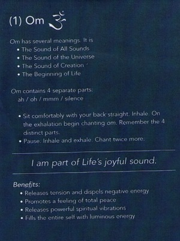
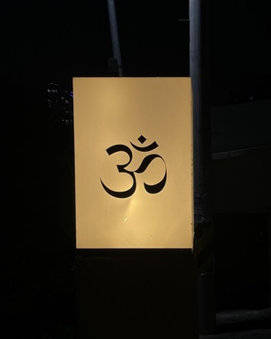
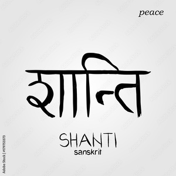
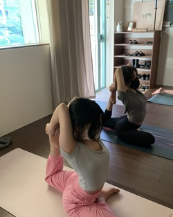
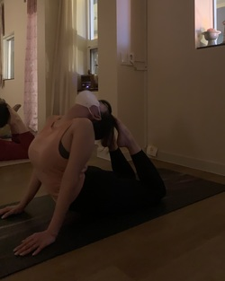

Hi, this is a space for you to get to know about yoga.
Om or aum (pronounced ah-uu-mm) is a sacred sound considered by many ancient philosophical texts to be the sound of the universe, encompassing all other sounds within it. In Sanskrit, om is called Pranava, which means to hum, and is considered an unlimited or eternal sound. Although the term is linked to Indian culture, Buddhism, Hinduism, and Jainism, om chanting is a spiritual practice that transcends culture and religion and is inclusive of all possible definitions and interpretations of God, or Brahma." - source
 Inner peace, a state of being mentally and spiritually at peace, with enough knowledge and understanding to keep oneself strong in the face of discord or stress. Kshanti, one of the paramitas of Buddhism. Shanti Mantras or "Peace Mantras”, Hindu prayers or sacred utterances believed by practitioners to have religious, magical or spiritual powers." - source
The asanas(poses) are called 'Eka pada Rajakapotasana' and 'Urdhva Mukha Svanasana' each.
 I can feel relaxed and relieved. Yoga is not doing asana but also meditating so that it makes me clear and healthy mind.